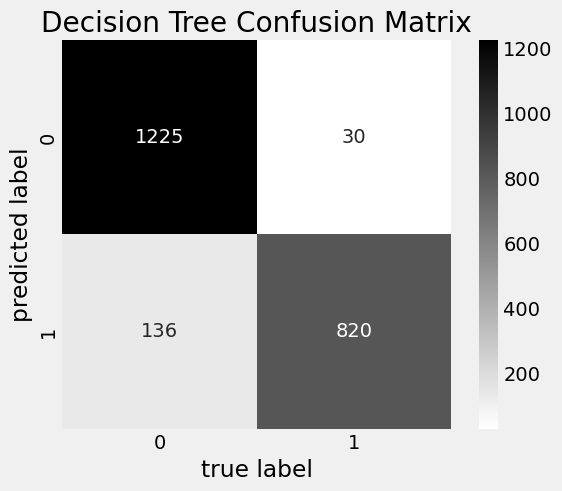

Detecting Phishing websites based on their URL attributes
1 Introduction
Phishing is one of the oldest yet one of the most prevalent forms of online identity theft and fraud. And the fact that it still works to this day makes phishing is a very lucrative business for cyber criminals, and is estimated to cost businesses and individuals billions of dollars every year. According to purplesec’s Cyber Security Trends report, more than 50% of IT professionals state that phishing attacks represent a top security concern. This is because phishing attacks don’t go after servers or networks which professionals can easily defend, but instead go after the weakest link in the chain, the user who doesn’t know any better.
The way a phishing scam works is a cyber criminal will send an email to a user that appears to be from a legitimate source, such as their bank, PayPal, Amazon, etc. and express some form of urgency in order to get the victim to act on impulse and not think rationally about the email, such as their PayPal account being restricted, or an unauthorized purchase on their Amazon account. The email will contain a link to a website, typically a login page, that will look identical to the legitimate website that they are impersonating. Once the user enters their credentials on the fake website, the cyber criminal will have access to their credentials and can access the victim’s accounts and even personal details.
The easiest way to tell if a website is “phishy” or not is to look at the URL of the page, oftentimes the url will be somewhat similar to the original, or not close at all in hopes that the victim doesn’t even look.
Notice how in the above example, the URL “paypal–accounts.com” is similar to, but not exactly the same as the original login page “paypal.com”. This is a common tactic used by cyber criminals to trick users into thinking that the website is legitimate.
Being able to effectively determine whether a website is a phishing scam or not is a very important skill to have, especially for those who are not tech savvy. This is because phishing scams are becoming more and more sophisticated, and it is becoming harder and harder to tell if a website is legitimate or not. This is why it is important to have a tool that can help users determine whether a website is a phishing website or not aside from their own intuition. This is where this project comes in.
2 Data Mining Task
The data mining task is to discern the optimal classifier method to use to predict whether a website is a phishing website or legitimate based on the URL attributes of the website.
The dataset contains 11055 websites, with each website having 30 attributes that characterize the website. The attributes are split into 3 categories: Address Bar Based Features, Abnormal Based Features, and Domain Based Features. The dataset also contains a label that states whether the website is a phishing website (-1) or legitimate (1). The goal is to use the attributes of the websites to predict whether the website is a phishing website or not.
2.1 Dataset
The dataset comes from the University of California Irvine’s Machine Learning Repository. The dataset contains information about 11055 websites and features found in their URLs that characterize a possible phishing website. There are 3 main categories that can show that a website is “phishy.”
1. Address Bar Based Features
Address bar features of a phishing website is usually the quickest and most obvious way to tell if a website is a phishing website or not. These features include:
- Adding a prefix or suffix to the domain name of the website with a hyphen
- Having a subdomain or multiple subdomains
- Use of a shortening service like bit.ly
- Low domain registration age
- URL Length > 54 characters
- Having an @ symbol in the URL
- Has an IP address in the URL
2. Abnormal Features
These features usually have to do with the content of the website and the underlying scripts that go on in the background.
- If the images in a website are loaded in from an external domain
- Minimal use of
<meta>tags - If a Server Form Handler is used
- If a web form redirects information to an email by using a
mailto:tag
3. HTML & Javascript Based Features
- Multiple website redirections
- Status bar customization using JavaScript to display a fake URL
- Disabling the right click on the website
- Using popups
- Iframes come from a different domain
4. Domain Based Features
- Unusually young domain age
- Low volume of traffic
- Where the domain ranks in Alexa’s top 1 million websites
- If the domain has been indexed by Google
3 Technical Approach
3.1 Data Partitioning
The data was split into a training and testing set along an 80/20 split. The training set was used to train the different classifier models, and the testing set was used to evaluate the performance of the models.
Cross validation was not performed because cross validation would have resulted in a much smaller training set, which would have resulted in a less accurate model.
3.2 Classifier Methods
Due to the nature of the dataset, it is clear that this dataset requires supervised learning. And the boolean nature of the labels makes this a classification problem. The classifier methods I used were:
- Decision Tree
- Random Forest
- Logistic Regression
- Linear Support Vector Machine
These methods were chosen because they are all relatively simple to implement and are very popular in real-world uses today.
4 Evaluation Methodology
The dataset derives from a collection of 11055 websites, with each index containing attributes of the website’s URL and its features. The examples were sourced by UCI by crawling the web and collecting the URLs of phishing websites and legitimate websites.
The models were tested for accuracy of classification using the split testing set. The accuracy of the models was measured by the number of correct predictions divided by the total number of predictions.
5 Results
After fitting each model to the training set and testing it on the testing set, the results are as follows and are organized in descending order of accuracy:
| Model | Testing Accuracy (%) | Training Accuracy (%) |
|---|---|---|
| Random Forest | 93.09 | 93.44 |
| Binary Logistic Regression | 92.94 | 92.40 |
| Linear SVM | 92.84 | 92.85 |
| Decision Tree | 92.18 | 92.49 |
With all of the models having a relatively balanced training and testing accuracy, it is safe to say that the models are not overfitting or underfitting the data.
5.1 Reasoning for Results
The Random Forest Classifier model performed the best out of the four models, with an accuracy of 93.09% on the testing set. This is due to the fact that the Random Forest Classifier is an ensemble method that uses multiple decision trees that are each slightly different from each other.
5.2 Confusion Matrix
Out of all of the confusion matrices, the decision tree model had the least false positives and false negatives. Which is interesting becaues it is the least accurate model out of the four even though its accuracy is still fantastic.

This is due to the fact that the decision tree model contains every single feature in the dataset, which means that its more likely to minimize false positives and false negative.
5.3 What I learned
From this project I learned how to properly use the different classifier methods and sci-kit learn as a whole. I also learned how to properly evaluate the performance of a model and how to make sure that the data allows for the model to be evaluated properly.
To further my analysis, I would like to try to build a program built off of the models that I’ve used that can take in a URL from input or as a browser extension and predict whether the current website a user is on is a phishing website or not.
6 Resources
https://www.cloudflare.com/learning/access-management/phishing-attack/
https://www.cybertalk.org/2022/03/30/top-15-phishing-attack-statistics-and-they-might-scare-you/
https://www.verizon.com/business/resources/reports/dbir/2022/master-guide/